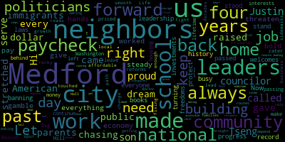

[Tseng]: Hi, I'm Justin Tseng, and I'm proud to serve as your city councilor in the city I've always called home. I'm the son of immigrants who came to Medford chasing the American dream. My parents stretched every dollar and raised me paycheck to paycheck, but it was our public schools, our neighbors, and this community that gave us everything. For the past four years, I've worked to give back and to pay it forward. Now as national politicians gamble with our economy and threaten our neighbors, Medford needs steady hands and bold leadership. I'll always stand up for you because Medford stood up for me. And over the past four years, we haven't just made progress, we've made history. While some leaders are busy banning books and turning neighbors against each other, we're building a city that welcomes everyone and works for all of us. We've made record investments in our schools and passed laws to protect our neighbors and our freedoms. While politicians in Washington and on Beacon Hill continue to cater to big money interests and leave us priced out and left behind, we're passing once-in-a-lifetime reforms to make housing more affordable, spur local business growth, and lead the fight against climate change right here at home. Life is rocky enough. Our job is to smooth the path. We're fixing roads and sidewalks that haven't been touched in decades. We brought back bus routes that families rely on because getting to work, school, or the doctor shouldn't depend on owning a car. And we're making City Hall more transparent and accessible so residents have a seat at the table. Because when national leaders fail us, Medford steps up. We prove that by leading with heart, with vision, and with the courage to do what's right, we can achieve results for all of us. But the job's not done yet. More than ever, we need leaders who know this community, and who show up and listen day in and day out. That's why I'm running for re-election. Let's keep building a Medford that works for you, me, and our neighbors down the street. Let's keep moving Medford forward together.
|
total time: 1.72 minutes total words: 360  |
|||
{kind=link}